Over Hill and Under Hill Guia do Loremaster em português
Um caçador volta das Colinas do Norte com uma história que não devia ser verdade. Gilraen acredita nele. A Companhia parte de Bree para descobrir o que despertou.
Como usar este guia
Este é um roteiro de mesa, não uma tradução do livreto. Ele organiza cena, informação, teste, consequência e transição na ordem em que vão surgir durante o jogo, com as palavras que você vai precisar dizer em português. O livreto da aventura e o Rules booklet continuam sendo as fontes oficiais: quando houver dúvida de regra ou de texto, é lá que se confere.
O que Rupert sentiu na colina foi Garaf, uma Warg antiga e astuta, sobrevivente das guerras de Angmar. Uma tribo de Goblins a venera e faz sacrifícios para ela no círculo de pedras da Colina da Coroa. Há dias, esses Goblins atacaram a aldeia de Cránn, mataram parte dos Hill-folk e levaram os sobreviventes para as cavernas onde a loba vive, para sacrificá-los na próxima lua cheia.
Nada disso chega aos jogadores de uma vez. A aventura funciona por camadas: o frio e o rosnado (Parte 1), a carcaça e as pegadas (Parte 2), a aldeia arrasada e as crianças (fim da Parte 2), o covil e a loba (Parte 3).
Estrutura
| Parte | O que acontece | Onde cortar a sessão | Tempo |
|---|---|---|---|
| 1 · Um Encontro Fatídico | Rupert conta sua história no Pônei Saltitante. A carta de Gilraen. Journey de uma semana rumo ao norte. | Quando a Companhia avista a Colina da Coroa. | ~1 h |
| 2 · A Colina da Coroa | O círculo de pedras, o poço maldito, a emboscada dos Goblins, as ruínas de Cránn e as crianças escondidas. | Quando a trilha aponta para leste. | ~1 h |
| 3 · Mandíbulas de Ferro | Journey para Rhudaur, o perseguidor misterioso, o labirinto de cavernas, o covil dos Goblins e Garaf. | Depois do combate final. | ~2 h |
| Epílogo | Volta a Bree, prisioneiros libertados, relato a Gilraen. | Fim. | 15 min |
Os heróis
Os jogadores escolhem livremente entre os cinco pré-gerados do Starter Set: Geira, Regin, Fimbrethil, Mentha e Duinhir. A aventura não foi desenhada para menos de três heróis. Os números de adversários em vários encontros dependem do tamanho da Companhia, então anote quantos são antes de começar. Fichas e biografias em português: A Companhia de Bree.
Convenção de termos. Perícias, papéis de viagem e nomes de dado ficam em inglês (TRAVEL, Guide, Feat Die), porque é assim que aparecem nas fichas que os jogadores têm nas mãos. Conceitos ganham tradução: Esperança (Hope), Sombra (Shadow), Fadiga (Fatigue), Ferido (Wounded). O glossário no fim lista tudo.
Uma última história antes de dormir
Função da parte. Lembrar que a Companhia já trabalha junta, apresentar uma testemunha assustada, colocar o pedido de Gilraen nas mãos dos jogadores e ensinar as regras de Journey no caminho. Termina com a colina no horizonte.
Situação inicial. Início de setembro. A Companhia está baseada em Bree e acaba de ajudar os Bounders do Condado com problemas na fronteira norte. Esta noite, descansa no Pônei Saltitante por um motivo: Gilraen, sua patrona, marcou um encontro com um caçador chamado Rupert Rushlight.
A noite no Pônei Saltitante

O que Rupert conta sem teste
- Há cerca de três semanas, caçava nas encostas orientais das Colinas do Norte quando uma tempestade o pegou.
- Procurando abrigo, subiu uma colina coroada por um círculo de pedras antigas.
- No topo, viu várias pegadas em volta de um poço raso no centro do círculo.
- Uma nuvem cobriu a lua. O ar ficou frio demais, frio de outro mundo; ele viu a própria respiração congelar.
- Sentiu uma presença antiga e hostil procurando por ele. Um rosnado ecoou pelas colinas.
- Fugiu colina abaixo quase até Bree. Contou aos Rangers, e a notícia chegou a Gilraen.
- Ele se recusa a voltar àquele lugar. Isso é um limite, não uma negociação.
Voz baixa e cansada; olha ao redor antes de falar; a mão treme quando lembra da colina e ele bebe para se recompor. Cooperativo, mas não quer reviver a experiência. Rupert não viu Garaf nem Goblins. Não transforme o relato em descrição de lobos ou sacrifícios.
Perguntas a Rupert
Se os heróis quiserem que ele se recomponha e dê detalhes para localizar a colina: PERSUADE ou COURTESY.
Sucesso: Rupert improvisa um mapa sobre a mesa com pratos, canecas e um rastro de migalhas. Faça a cena física. Falha: ele continua abalado e não consegue ser preciso. Não retire a carta nem a missão; os heróis ainda podem usar o que sabem da região.
Se preferirem confiar no próprio conhecimento: LORE.
Sucesso: a colina fica perto de Cránn, um pequeno assentamento de Hill-folk, gente reservada mas não hostil. Grande ou extraordinário êxito: acrescente o contexto de As Colinas Escuras de Rhudaur, abaixo.
Os Hill-men vivem no extremo norte de Eriador desde antes do Reino do Norte existir, empurrados para as colinas de Rhudaur pelos Númenóreanos. Do ressentimento nasceu uma aliança com Angmar, que virou servidão. Quando o Rei Bruxo caiu, muitos fugiram para leste; outros ficaram escondidos em cavernas e vales secretos. Seus descendentes ainda vivem lá, caçadores e guerreiros, numa paz frágil com os Orcs que de tempos em tempos saqueiam a região.
A carta de Gilraen
Ao terminar, Rupert entrega um envelope com o selo de Gilraen. Este é o momento do handout (o Starter Set traz o original; você tem uma versão em português na sua pasta). Deixe um jogador ler em voz alta. Sem teste para entender a carta. O conteúdo, em resumo:
Amigos, escrevo com o coração pesado. Ouvi de um caçador de Bree chamado Rupert uma história que me perturbou: ele diz ter sentido, nas Colinas do Norte, uma sombra antiga que acordou. Pedi que ele contasse a vocês. Temo que essa presença ameace não só quem vive perto das Colinas, mas todo o Eriador. Peço que sigam para o norte e descubram a origem desse mal antes que ele cresça. Vocês têm o valor e a sabedoria que isso exige. Que a esperança guie o caminho de vocês.
Gilraen
Mãe de Aragorn, patrona da Companhia. Com o filho quase sempre longe, os capitães dos Rangers a procuram como conselheira. Ela não aparece nesta aventura, mas o vínculo importa: o Ranger que os heróis vão encontrar na Parte 3 é filho dela.
Depois da carta, pergunte "o que vocês fazem?". Dê espaço para comprar provisões, conversar, estudar o mapa, dormir. Nada disso pede dado. Quando estiverem prontos, resuma a saída de Bree e anuncie que a viagem será resolvida pelas regras de Journey.
Rumo às Colinas do Norte
Dias quentes, noites claras. Cada herói escolhe um papel: Guide (rota, TRAVEL nos Marching Tests), Hunter (HUNTING), Look-out (AWARENESS), Scout (EXPLORE). Só há um Guide; com menos de quatro heróis, alguém acumula.
| 1 | Caminho. Já definido: pela Greenway ao norte, rumo a Fornost, cerca de 60 milhas (3 hexes de estrada em Wild Lands); depois nordeste pelas Colinas do Norte, mais 60 milhas (3 hexes de terreno aberto em Dark Lands). |
| 2 | Marching Tests. Setembro, ainda verão. A rota de 6 hexes provavelmente pede dois testes e produz pelo menos dois eventos. Não force um segundo evento se os dados levarem a Companhia ao destino antes. |
| 3 | Fim. Ao chegar à Colina da Coroa, depois de cerca de uma semana. Cada herói lida com a Fadiga acumulada com um teste de TRAVEL. |
Wild Lands: Feat Die normal para o tipo de evento. Dark Lands: Ill-favoured (dois Feat Dice, fique com o pior). Evento em estrada: o herói-alvo ganha (1d). Terreno difícil: perde (1d).
Evento expandido · O Poço dos Homens Mortos
Use quando quiser dar corpo a um evento de Journey, especialmente Terrível Infortúnio, Desespero ou Más Escolhas. Não é obrigatório.
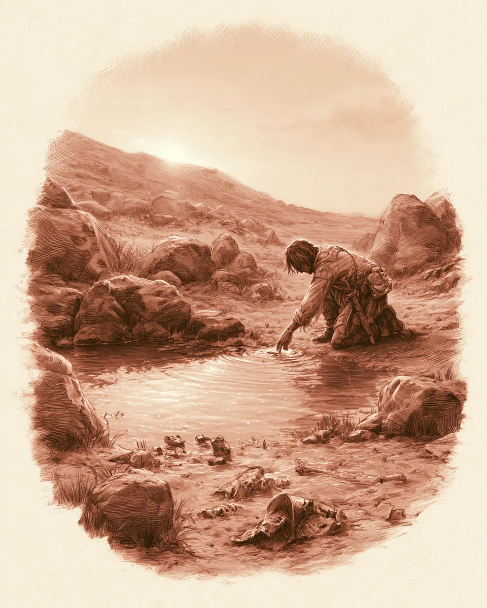
O que aconteceu ali. Há muito tempo, arqueiros de Cardolan emboscaram e mataram soldados de Angmar que recolhiam água no lugar. A memória do massacre ficou.
A isca. Quem chega perto da água nota um broche antigo brilhando no fundo, ao alcance da mão. Tocar nele desperta a maldição.
Resolva primeiro o teste normal do evento. Se falhar, além da consequência do evento, uma força invisível tenta afogar o herói. Role um Feat Die para a perda de Endurance por sufocamento: número, perde esse tanto; Olho de Sauron, perde toda a Endurance; Runa de Gandalf, não perde nada.
Depois, a água clareia e mostra ossos e pedaços de armadura corroída entre as pedras. Se os heróis ignorarem o broche, ótimo: a cena cumpriu seu papel como presságio.
No fim de cada perna da viagem, cada herói cancela Fadiga com um teste de TRAVEL (Rules booklet, p. 23). Isso acontece na Colina da Coroa e de novo no Covil da Loba. Fadiga que sobrar da primeira perna passa para a segunda: ninguém descansa direito até a aventura acabar.
Fechando a sessão
Quando o último Marching Test alcança o destino, descreva o avistamento: a colina dentro de um pequeno bosque, o topo quase nu, cinco pedras escuras contra o céu. Corte aí. A investigação fica para a próxima sessão.
O que dorme sob as pedras
Função da parte. Transformar o mistério em evidência (a carcaça, as pegadas, as runas), dar o primeiro combate e apresentar as vítimas reais (Cránn). Termina com a trilha apontando para leste.
A subida
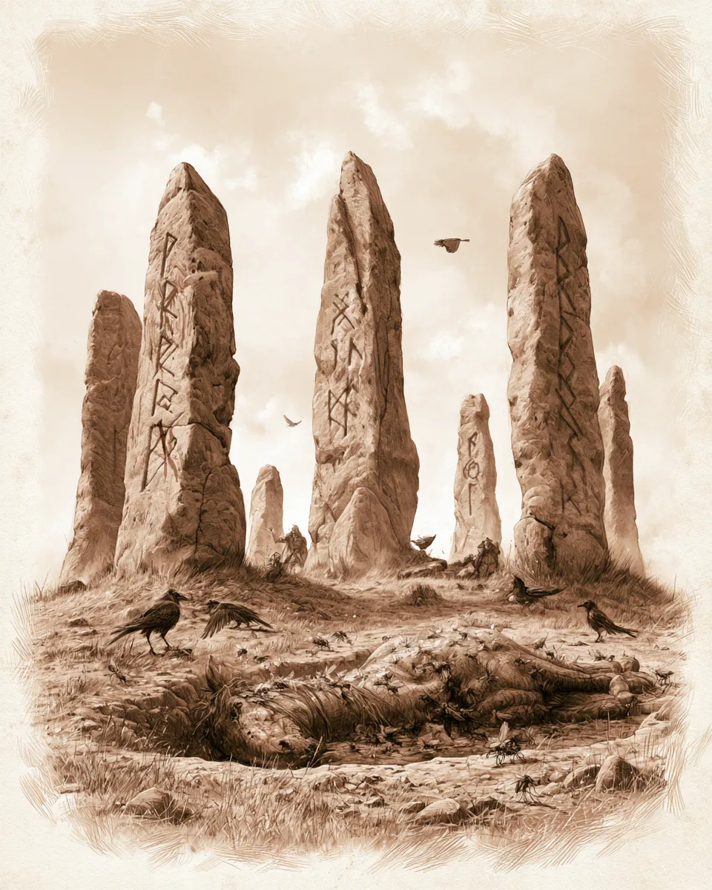
O círculo era um lugar de culto dos Hill-folk. Os Orcs o profanaram para oferecer sacrifícios a Garaf, e o lugar está maldito. Mostre o mapa da colina.
Quem entra no círculo de pedras ganha 2 pontos de Sombra (Temor). Quem falhar no teste de Sombra sente o mesmo frio sobrenatural de Rupert e percebe uma presença observando de longe.
O poço maldito
A carcaça no poço é de um cavalo grande, morto com selvageria e parcialmente devorado. Examinar os restos pode revelar:
- Restos meio queimados de arreios. Um herói Elfo ou Ranger reconhece que pertenciam a um dos Dúnedain; outros conseguem o mesmo com LORE.
- HUNTING: o animal morreu nos últimos três dias. Outros ossos queimados indicam muitas oferendas anteriores: javalis, cervos, ossos humanos e de Orcs.
Se a Companhia parar para enterrar o cavalo com respeito, anote. O dono vai saber disso na Parte 3.
Pistas e enigmas
- HUNTING nas pegadas do topo: vários Goblins e uma matilha de quadrúpedes, provavelmente Wargs. Grande ou extraordinário êxito: uma pegada enorme, de uma criatura de tamanho descomunal.
- Nas pedras: runas antigas na língua dos Hill-folk, profanadas recentemente com rabiscos e símbolos imundos. LORE: os rabiscos são uma invocação num dialeto degenerado da Língua Comum usado por Orcs, louvando "a poderosa Rainha da Noite, a Presa do Norte".
- Uma trilha antiga sai da colina para leste. Leva às ruínas de Cránn.
O ataque
Um bando de Goblins vigia o bosque em volta da colina desde que a Companhia se aproximou. O líder é Hakmogg, um Orc Hunter veterano. Usam peles de lobo, elmos em forma de cabeça de lobo e escudos com lobos pintados.
Efetivo: Goblin Archers em número igual ao de heróis, mais Hakmogg e um Wild Wolf (cria de Garaf).
Hakmogg espera o momento certo: sempre com o sol encoberto ou à noite, de preferência quando os heróis estão distraídos examinando o topo. Peça um teste de AWARENESS para notar os atacantes. Se falhar, os Goblins atacam primeiro na Opening Volley. Use o diagrama de combate e as figuras do Starter Set. Se Hakmogg morre, o lobo e os Goblins restantes fogem.
As ruínas de Cránn
Seguindo a trilha para leste, sem procedimento de Journey (é o mesmo hex).
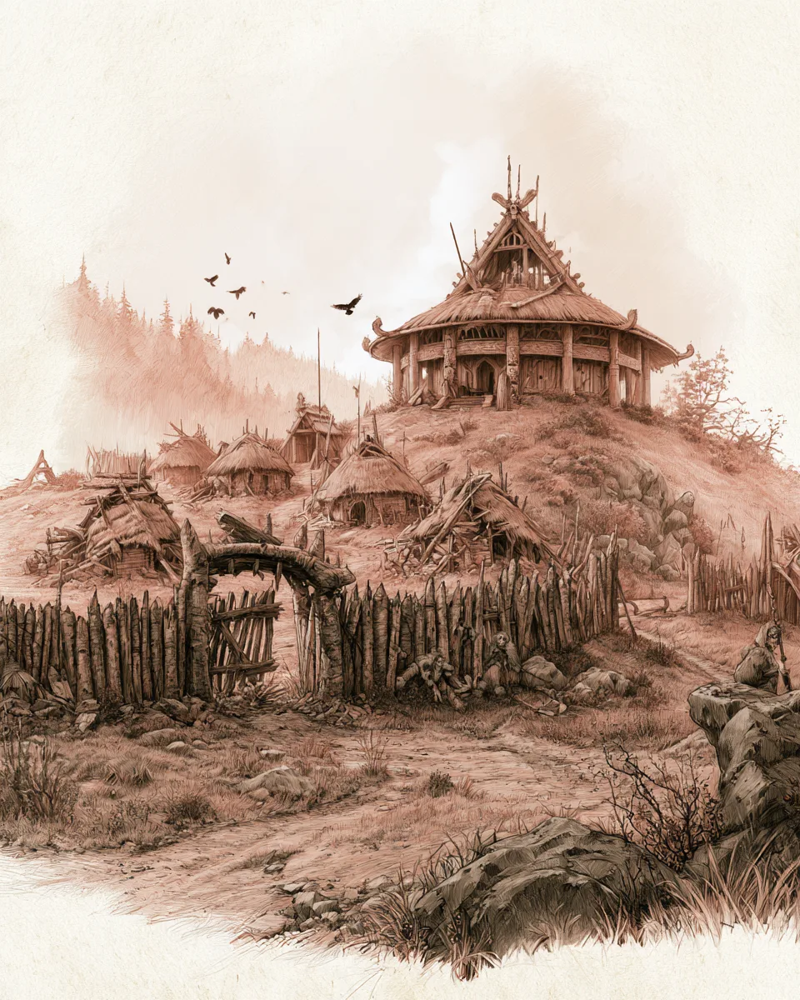
A entrada fica ao norte, onde um portão de madeira jaz quebrado no chão. Dentro, cerca de duas dúzias de cabanas destruídas, sinais claros de luta, poucos corpos, e os que restam foram meio devorados por Wargs. Mostre o mapa da aldeia. O maior prédio é o Salão Comunal.
O Salão Comunal
Circular, uma dúzia de passos de diâmetro, metade disso de altura. Telhado de palha sobre vigas de madeira entalhadas com símbolos antigos. Porta arrombada, móveis destruídos, uma grande lareira de pedra intacta. Serve de abrigo seguro para a noite. Mas não está vazio.
Escondidos entre as vigas, seis filhos dos Hill-folk: Cuvrag, de nove anos, e os cinco irmãos menores. Observam em silêncio. Aterrorizados e muito furtivos. A Companhia pode notá-los se montar vigília ou acampar no salão. Se alguém cozinhar, o cheiro faz as crianças famintas se mexerem.
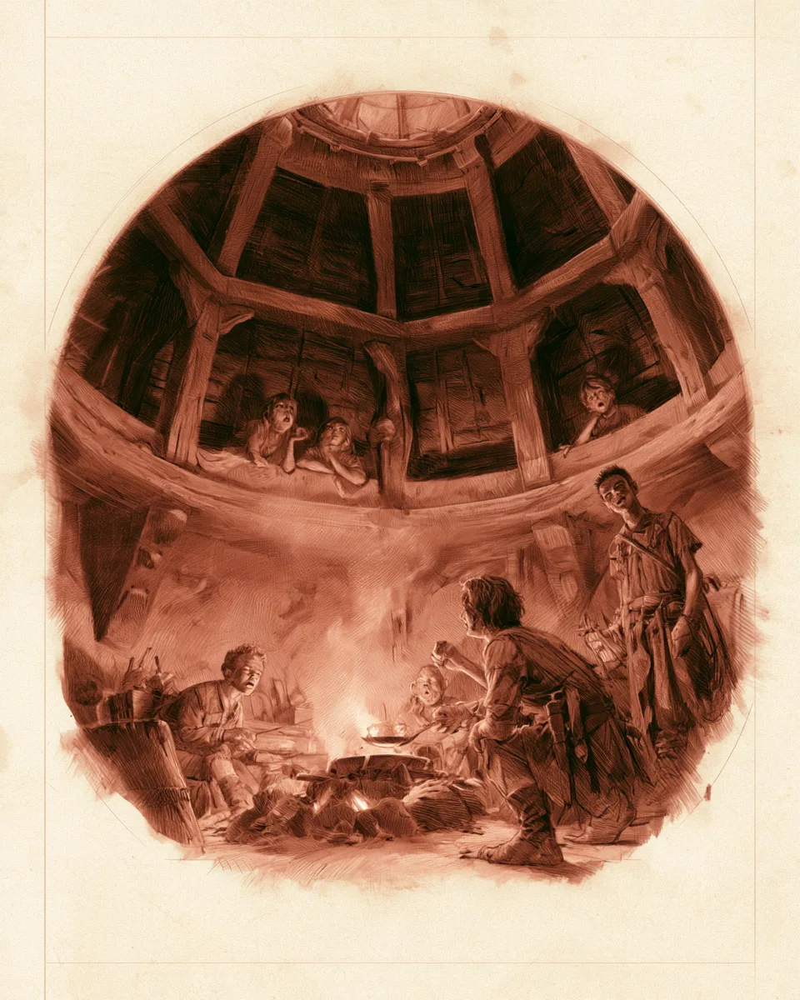
Ganhar a confiança das crianças · Council
Use as regras de Council (Rules booklet, p. 19).
| 3 | Razoável. Que contem o ataque de onde estão. |
| 6 | Ousado. Que desçam e falem cara a cara. |
| 9 | Ultrajante. Que Cuvrag guie a Companhia e aponte o caminho. Cai para 6 se a Companhia prometer salvar os parentes. |
- 2 · O porta-voz faz COURTESY para se apresentar. O resultado define o tempo da conversa.
- 3 · ENHEARTEN e PERSUADE são boas escolhas para conduzir. Se um Elfo ou Ranger lidera, as perícias perdem (1d): as crianças os acham intimidadores. Se um Hobbit lidera, ganham (1d).
Se o Council tem sucesso, Cuvrag conta: há dois dias, Goblins vestidos de pele de lobo e acompanhados de Wargs atacaram à noite. Depois de dominar os sobreviventes, acorrentaram todos e os levaram para leste. Sobre a colina: os Hill-folk hoje a temem e evitam; um caçador da aldeia viu uma pegada enorme de Warg perto dela; no último ano, a caça sumiu, como se algo insaciável devorasse tudo. Cuvrag também ouviu um Goblin murmurar, nervoso, que "ela" precisava ser aplacada e que ele não queria ser a próxima refeição.
A trilha leva para leste
As pegadas em volta de Cránn são inconfundíveis: dezenas de indivíduos, mistura de Goblins, Homens e uma matilha grande de Wargs, todos para leste. Para dentro das terras ermas de Rhudaur, reino maldito de espíritos maus e Homens selvagens. Corte a sessão aqui.
Para dentro de Rhudaur
Função da parte. A sessão longa. Journey para leste com um encontro fixo (Strider), um labirinto de cavernas com encontros aleatórios, o covil dos Goblins como um problema tático aberto, e Garaf como clímax. Os jogadores vão precisar pensar, não só rolar.
Journey para leste
Novos papéis. Rota reta para leste, cerca de 80 milhas (4 hexes) de terreno aberto em Wild Lands. Se Cuvrag guia a Companhia, o Guide ganha (1d) no primeiro teste de TRAVEL; depois o menino volta para os irmãos.
Qualquer evento desta Journey vira a cena O Perseguidor Sombrio. O tipo de evento rolado colore a apresentação da cena. Mesmo que a Journey se resolva num único Marching Test, a cena acontece.
A Journey termina no Covil da Loba. Fadiga como antes.
O Perseguidor Sombrio
Alguém segue a Companhia. O Look-out pode tentar SCAN para notar uma figura solitária de roupas esfarrapadas, como um espectro. Ele é impossível de despistar; em algum momento os heróis vão ter de lidar com ele: emboscada, posição defensiva ou um convite aberto junto à fogueira.
Ele se apresenta como "Passolargo" (Strider). Gente de Bree conhece o nome das visitas ao Pônei. Elfos de Valfenda e Rangers podem saber que é Aragorn, filho de Arathorn e de Gilraen. Ele voltava a Bree com outros Rangers quando Goblins os emboscaram e roubaram um cavalo. Se a Companhia enterrou o animal, ele agradece antes de perguntar quem são. Como filho da patrona, sabe algo sobre eles, mas prefere confirmar: nestas terras a mentira é comum.
- Ouviu falar de um novo clã de Goblins com costumes estranhos, mas ainda não investigou.
- Não se junta à Companhia: tem assuntos urgentes muito ao sul.
- Se algum herói está seriamente ferido, oferece um gole de um frasco de prata com Miruvor, o cordial de Imladris: recupera toda a Endurance, cancela toda a Fadiga e reduz em um dia o tempo de cura de um Ferimento.
O Covil da Loba
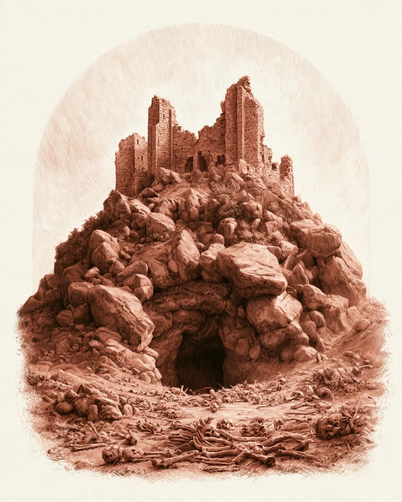
A entrada está coberta de ossos velhos, humanos e de animais, quebrados por mandíbulas enormes. O sistema de cavernas se estende por milhas. Escuridão total: assuma que a Companhia tem tochas ou lanternas. Garaf permitiu que os Goblins ocupassem as cavernas externas e reservou as profundas para si e sua matilha.
Muitos caminhos · EXPLORE
A exploração exige três testes de EXPLORE, cada um feito por um herói escolhido como guia. Se a Companhia avança com cautela, os testes perdem (1d) (mais tempo, mais encontros), mas isso dá vantagem ao chegar ao covil.
| Falha | Encontro perigoso. Role um Success Die na tabela. |
| Sucesso | Encontro normal. Role um Success Die na tabela. |
| Grande ou extraordinário | O guia começa a entender o labirinto. Sem encontro. |
Repita a rolagem se sair um encontro já vivido. Após os três testes, a Companhia chega ao Covil dos Goblins. Se algum EXPLORE produziu ícone de sucesso, chegam pelo Túnel Alto (#2); senão, pela Entrada Principal (#1).
| 1 | Uivos das Profundezas |
| 2–3 | Tambores na Escuridão |
| 4–5 | Assado Órquico |
| 6 | O Troll Petrificado |
| 1 | Os Olhos Vigilantes da Rainha |
| 2–3 | A Ponte dos Perigos |
| 4–5 | Banquete de Sangue |
| 6 | O Arsenal Secreto |
Encontros normais
Uivos das Profundezas. Um uivo antigo e selvagem atravessa as cavernas. É Garaf, incomodada pelos intrusos. Cada herói ganha 1 Sombra (Temor). O som vem dos túneis profundos; se a Companhia o segue, ganha (1d) no próximo EXPLORE.
Tambores na Escuridão. Tambores e cantos guturais de Goblins. Seguir o som dá (1d) no próximo EXPLORE, mas o ritmo indica que os Goblins estão se reunindo: +2 Goblin Archers no covil.
Assado Órquico. Cheiro de lenha queimando, luz de fogo, vozes. Dois Orc Guards, Kishak e Jagga, discutem como cozinhar a prisioneira: um quer picar e fritar, o outro quer assar no espeto até ficar preta. Num saco, um par de pés em tamancos de madeira: Vella, uma Hill-folk de Cránn. Os Orcs estão distraídos: ataque surpresa, distração, ou SONG para imitar as vozes e fazê-los brigar entre si. Resgatar Vella rende informação (ver PNJs). Abandoná-la é uma Má Ação: 2 Sombra para cada herói. Avise se parecerem inclinados a isso.
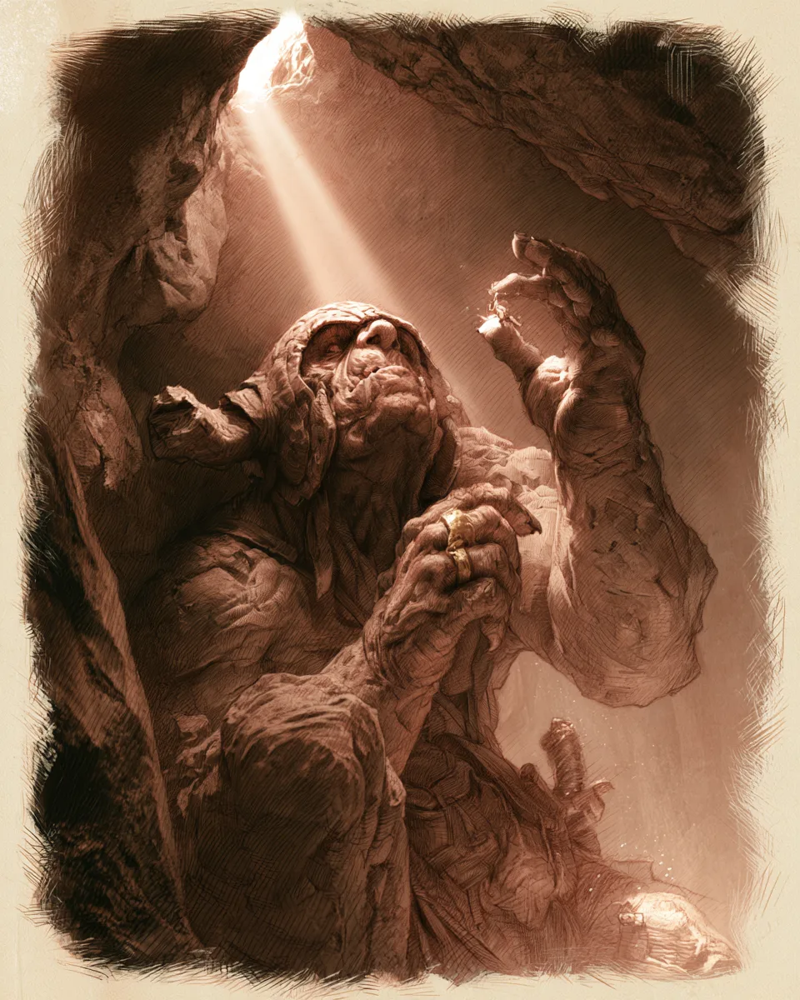
O Troll Petrificado. Um raio de sol entra por uma fenda no teto e ilumina um Troll de pedra, elmo com um chifre quebrado, a mão erguida como se examinasse algo delicado entre os dedos. É Guzar Meio-chifre, ladrão infame que aterrorizou Arthedain séculos atrás e aparece em baladas antigas: SONG ou LORE identifica. Perseguido pelos homens do Rei, fugiu para Rhudaur com o saque; o sol o pegou numa caverna. No dedo, um anel de ouro intacto. Para alcançá-lo, ATHLETICS; na falha, a estátua desaba e quem estiver perto perde Endurance igual a um Success Die. O anel é o Anel de Greystock.
Anel de ouro simples com uma rara hematita cinza, de origem númenóreana. Passou por gerações de curadores que se estabeleceram em Tharbad e encurtaram o nome para "Stock". O último dono foi Tarion Stock, curador do Rei de Arthedain, desaparecido numa viagem. Bênção de HEALING: (2d) em todos os testes de HEALING; pressionado contra uma ferida envenenada ou infectada, a pedra fica vermelha e purga o sangue ruim. A última herdeira viva, Lady Almarian Stock de Tharbad (Ruins of the Lost Realm, p. 15), pagaria bem pela devolução.
Encontros perigosos
Os Olhos Vigilantes da Rainha. Uma caverna de estalactites, e no centro um Warg negro do tamanho de uma carroça, agachado, pronto para saltar, com o olhar cravado em vocês. Não está vivo: é uma formação rochosa que os Goblins entalharam para reforçar a semelhança, com cristais amarelos nas órbitas. Um ar de malícia se sente à distância.
- Quem se aproxima e encara os olhos ganha 2 Sombra (Feitiçaria). Para contornar sem olhar: STEALTH; na falha, cruza o olhar com o mesmo efeito.
- Para "cegar" a estátua arrancando os cristais: teste de VALOUR. Falha: encarou o olhar, mesmo efeito. Sucesso: uma sensação de triunfo, como se a influência de Garaf tivesse enfraquecido. Garaf perde 2 de Ódio (Hate).
A Ponte dos Perigos. Um abismo com água correndo lá embaixo, uma ponte de corda esgarçada, e do outro lado dois Orc Soldiers conversando distraídos. Emboscada possível. Se os dois não caem de imediato, um deles começa a cortar as cordas, uma por rodada. Com a primeira corda cortada, quem está na ponte faz ATHLETICS ou cai, perdendo (2d). Com as duas, a ponte desaba. Quem cai no rio: Feat Die para sufocamento (número perde esse tanto; Olho perde tudo; Runa não perde) e ATHLETICS para subir de volta. Alternativa: uma saliência estreita ao longo do abismo, encontrada com EXPLORE; atravessá-la pede teste de VALOUR, e a falha é uma queda.
Banquete de Sangue. Um rosnado baixo, o som de mandíbulas roendo, olhos amarelos acendendo um par de cada vez. Uma matilha de Wild Wolves devora os restos de um Goblin. O líder rosna que ninguém interrompe o lanche deles. São um a menos que os heróis, todos prontos para atacar. Se a Companhia vence, descobre que o Goblin, Kulash, está gravemente ferido mas vivo e desafiador: prefere ser refeição a ser salvo por um bando de tolos. AWE ou RIDDLE: ele revela que os lobos tratam os Goblins como escravos da rainha, Garaf, e comem um ou dois quando estão nervosos ou com fome. Se a Companhia o poupa ou ajuda, ele indica o caminho de má vontade: grande êxito automático no próximo EXPLORE.
O Arsenal Secreto. Numa pausa na passagem, a chama da tocha se inclina para um trecho da parede, como puxada por uma corrente de ar. Todos fazem AWARENESS; se todos falham, o encontro termina. Se um acerta, há uma porta secreta sem maçaneta ou fechadura, que abre com pressão no ponto certo: CRAFT; grande êxito ou melhor revela trabalho órquico antigo. Dentro, uma câmara quadrada escavada com precisão, estantes empoeiradas de cimitarras, lanças, arcos curtos e escudos com o selo de Angmar. Nada melhor que o equipamento dos heróis. No canto, um barril lacrado com um pedaço curto de corda saindo do topo: LORE identifica fogo explosivo órquico.
Mistura de pós, carvão e minerais capaz de derrubar paredes e abrir passagens de pedra. Muitos Orcs morrem pela própria audácia ao usá-la. A Companhia pode levar o barril e virar a malícia do Inimigo contra ele.
- Acender o pavio: CRAFT. Sucesso: armam e recuam para distância segura. Falha: o pavio velho apaga. Falha com Olho de Sauron: o pavio acende num clarão e a explosão pega a Companhia na fuga.
- Cada vítima: Feat Die para perda de Endurance (número, Olho perde tudo, Runa não perde). Quem chega a zero fica Ferido. Contra parede ou porta, abre passagem em qualquer barreira que não seja das mais grossas.
- Carga 3, uso único. Produto de artes sombrias: quem o usa ganha 1 Sombra (Feitiçaria).
O Covil dos Goblins
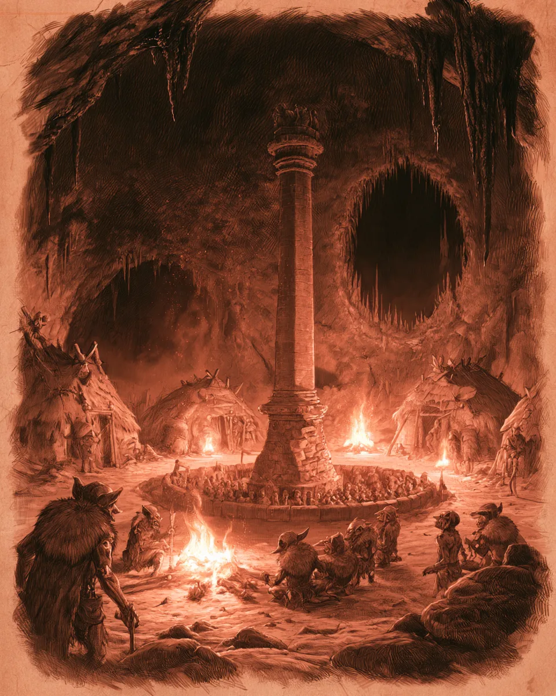
Mostre o mapa do covil. Os locais numerados:
| 1 | Entrada Principal. Passagem que dá numa saliência elevada; degraus toscos descem para o acampamento. Guardada por um Goblin Archer com uma trompa. Se ele vê intrusos e não morre na primeira rodada, dá o alarme. |
| 2 | Túnel Alto. Passagem negligenciada pelos Orcs que termina uma dúzia de metros acima do chão. Descer pela escarpa quebrada: ATHLETICS por herói; a falha faz barulho e dá o alarme. Subir de baixo é sempre barulhento, a não ser com cordas ou equipamento vindo de cima. |
| 3 | Cabanas de Pele. Cabanas de couro cru, fedor insuportável, catres imundos, pedras de afiar dentes e armas, ossos roídos. Fogueira comunal no sudoeste. Dois grupos, cada um com 2 Orc Soldiers e Goblin Archers em número igual aos heróis menos 1. Andar entre as cabanas: STEALTH por herói; a falha dá o alarme. |
| 4 | Vala dos Prisioneiros. Cerca de uma dúzia de aldeões de Cránn numa vala de três metros de fundo em volta da coluna. Impossível sair sem ajuda de cima. Uma escada frágil e baldes de lavagem ficam na beira; a escada serve de ponte improvisada até a coluna. Chegar à vala: STEALTH por herói; a falha dá o alarme. No sucesso, os Orcs percebem assim que os prisioneiros começam a subir, e então chamam Garaf. |
| 5 | A Coluna de Pedra. Sustenta o teto abobadado. Se for destruída (fogo explosivo, por exemplo), o teto desaba e esmaga tudo dentro; melhor estar longe. Fácil de escalar; de uma saliência perto do topo, um herói tem visão de toda a caverna, pode adotar Rearward Stance independentemente do tamanho da Companhia e ganha (1d) em ataques à distância. |
| 6 | As Mandíbulas da Rainha. Abertura grande e sinistra cercada de estalactites, que desce para o território de Garaf. Os Orcs temem este lugar e não entram por motivo nenhum. Além do limiar, duas aberturas: à esquerda, o covil de Garaf; à direita, os ossos de Araf, seu irmão gêmeo, com uma lança élfica cravada no crânio: Naurnaith. O caminho continua ainda mais fundo. Garaf não espera desafio em casa e nunca monta guarda, mas mesmo dormindo sente o cheiro de Elfos e Rangers. |
- 1 Goblin Archer na Entrada Principal (#1).
- 2 grupos nas Cabanas de Pele (#3): cada um com 2 Orc Soldiers + Goblin Archers = heróis − 1. Com cinco heróis: 4 Orcs e 8 Goblins no total. Some os +2 Goblins se "Tambores na Escuridão" aconteceu.
- Garaf nas Mandíbulas da Rainha (#6). Com 4 heróis, acompanhada de 1 Wild Wolf; com 5, de 2.
O alarme
Os adversários não esperam luta; com cuidado, a Companhia se move sem ser vista. O alarme soa se: o Goblin da entrada vê os heróis e sobrevive à primeira rodada; alguém falha STEALTH na vala ou entre as cabanas; alguém falha ATHLETICS descendo do Túnel Alto; o fogo explosivo detona; qualquer outro barulho alto. Com o alarme, um grupo ataca de imediato e o segundo entra na terceira rodada.
Invocando Garaf
O perigo real não são os Orcs. Eles param de lutar e uivam em coro por uma rodada inteira, chamando a rainha, em duas situações: quando perderam metade ou mais do efetivo, ou quando a Companhia está prestes a libertar os prisioneiros e fugir. Logo depois do uivo, todos os Orcs e Goblins restantes fogem. Antes que todos os prisioneiros saiam da vala, Garaf chega, possivelmente com um ou dois Wild Wolves.
Um assalto direto é difícil para jogadores novos. Incentive astúcia, como Gandalf com os Goblins das Montanhas Sombrias:
- Túnel Alto: reconhecimento e surpresa.
- Foco nos prisioneiros: uns criam diversão (incendiar as cabanas), outros resgatam.
- Escolher o campo: a coluna é um posto excelente para arqueiros.
- Fogo explosivo: caos, bomba ou diversão. Os prisioneiros na vala ficam protegidos da explosão.
- As Mandíbulas da Rainha: um batedor furtivo pode contornar o acampamento, pegar Naurnaith e enfrentar Garaf antes dos Orcs reagirem. Matá-la vira a batalha: os Orcs a veneram e teriam pavor de quem a derrubasse.
Garaf, a Presa do Norte
Respondam ou não, a resposta dela é a mesma: vangloria-se de ter quebrado ossos de príncipes de Arthedain e devorado guerreiros élficos, promete comer os heróis ainda quentes, e se nomeia: Garaf, primeira cadela de caça do Rei Bruxo, a Presa do Norte. E salta.
Garaf luta com ferocidade e astúcia. Sobreviveu séculos porque não é tola: se Ferida, recua para as sombras do covil. Se sobrevive e se recupera, reconhece o cheiro da Companhia e passa a caçá-los com uma matilha implacável. Se morre, os Wargs restantes fogem, apavorados.
Uma de duas grandes lobas que serviram ao Rei Bruxo nas guerras de Angmar, de uma linhagem que remonta a Carcharoth, o guardião de Angband. Ela e o gêmeo Araf lideravam a vanguarda dos Wargs contra Arthedain. Na Batalha de Fornost, Araf morreu interceptando uma lança de Haligrel, nobre da hoste de Glorfindel, salvando o Senhor de Angmar. Louca de raiva, Garaf matou Haligrel e fugiu ferida, carregando o corpo do irmão. Escondeu-se por séculos nas cavernas de Rhudaur, sentindo-se abandonada pelo Mestre. Anos atrás uma tribo de Goblins a encontrou e jurou lealdade. Agora, com seguidores, ela começa a sentir de novo o chamado distante do antigo senhor.
Lança grande forjada em Eregion para a guerra contra Sauron, lâmina gravada com folhas e flores de acônito e runas élficas. Carrega as bênçãos Bane of Wolves e Superior Keen: marca Piercing Blow em 9+ ou, contra Lobos, em 10 menos o VALOUR de quem a empunha.
De volta a Bree
Se venceram ou evitaram Garaf, libertaram os prisioneiros e os levaram de volta à aldeia, os Hill-folk os receberão como hóspedes de honra daqui em diante: um refúgio possível para futuras expedições a Rhudaur. A Companhia deve contar tudo à patrona. Derrotar um inimigo como Garaf é história que não se guarda em silêncio.
Recompensas (Fase da Companhia)
Aplique os Pontos de Aventura e de Perícia conforme o Rules booklet. Itens possíveis: Anel de Greystock, Naurnaith, restos do arsenal de Angmar. Ganchos abertos: a herdeira dos Stock em Tharbad; o novo clã de Goblins que Strider mencionou; o "chamado do Mestre" que Garaf começou a sentir.
Quem a Companhia encontra

Velho, manco, um olho enfaixado (o livreto não explica por quê; se perguntarem, marcas da vida de caçador). Testemunha assustada. Sabe menos do que parece e não volta à colina por preço nenhum.
"Não me peçam para voltar àquelas pedras."
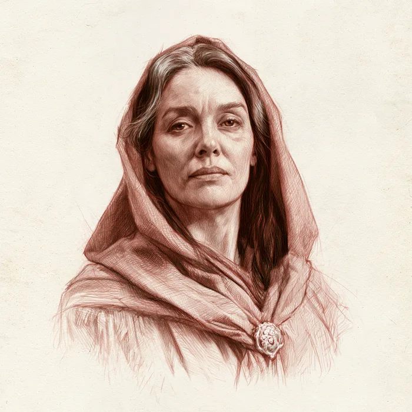
Mãe de Aragorn, conselheira dos capitães dos Rangers. Sustenta e orienta a Companhia. Não aparece em cena; fala pela carta. Core Rules, p. 212.
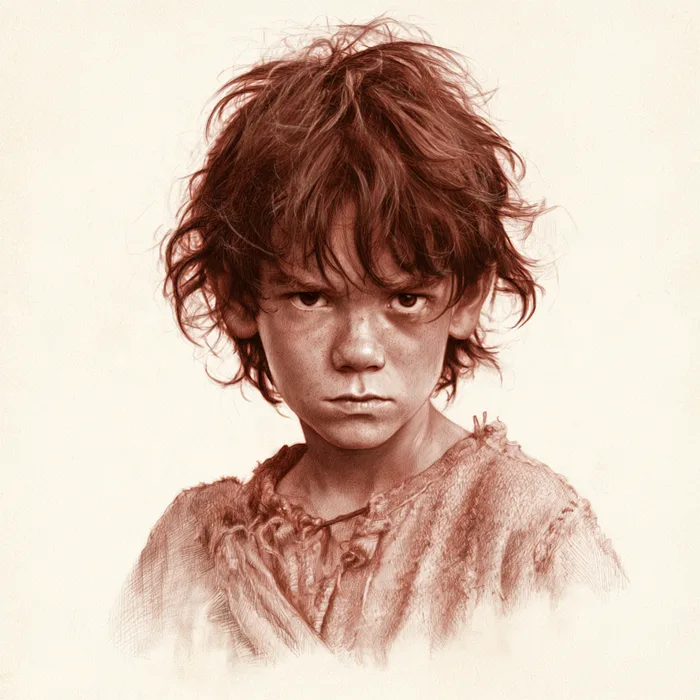
Quase um homem pelos padrões dos Hill-folk. Cuida dos cinco irmãos menores desde que os pais adoeceram e morreram, dois anos atrás, com um vento ruim vindo do norte. Escondido nas vigas do Salão Comunal na noite do ataque, ouviu um Goblin nervoso falar da "fome dela". Pode guiar a Companhia por um trecho.
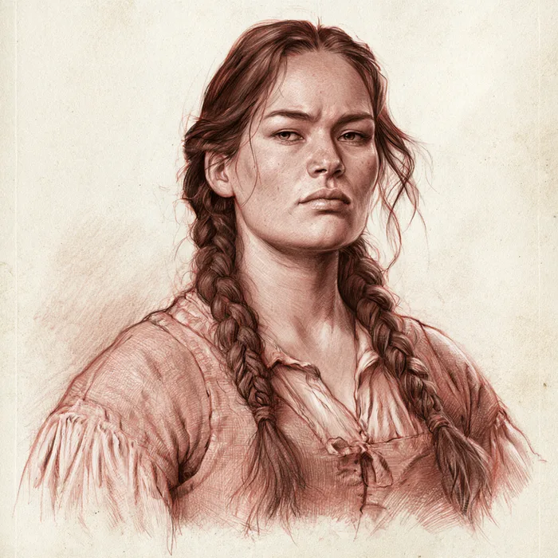
Fim dos vinte anos, solteira e satisfeita; seu único amor eram as galinhas, que os Goblins comeram. A raiva disso queima mais que a perda da aldeia. Conhece a disposição geral do covil pela marcha forçada, mas pouco das cavernas: dois Orcs a ensacaram e a carregaram.
"Eles comeram as minhas galinhas. Todas."
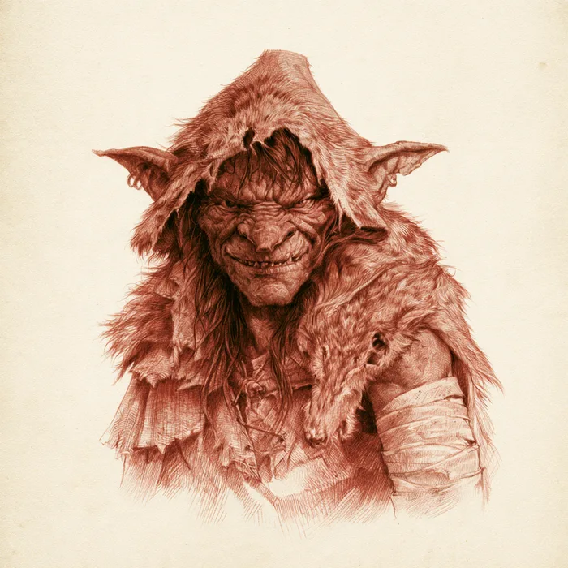
Quase devorado pelos próprios "aliados". Despreza quem o salva. Sob AWE ou RIDDLE, confirma que os lobos tratam os Goblins como comida de reserva. Se poupado, dá o caminho.

Procura um cavalo roubado. Cauteloso, testa a Companhia antes de confiar. Não se junta a eles. Oferece Miruvor a quem está mal. Não revele a identidade de graça: deixe que Elfos e Rangers a deduzam.
"Vocês não me parecem gente que mata cavalos."
Blocos de estatísticas
Habilidades cruéis resumidas. Regras completas de combate no Rules booklet, p. 13.
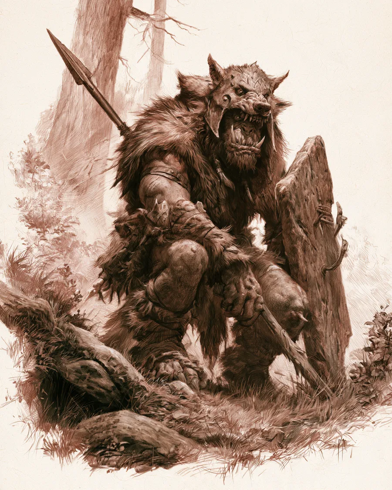
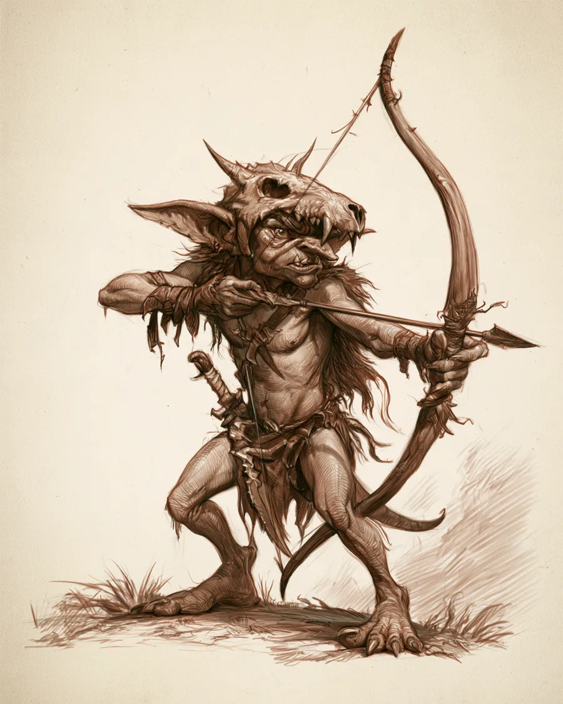
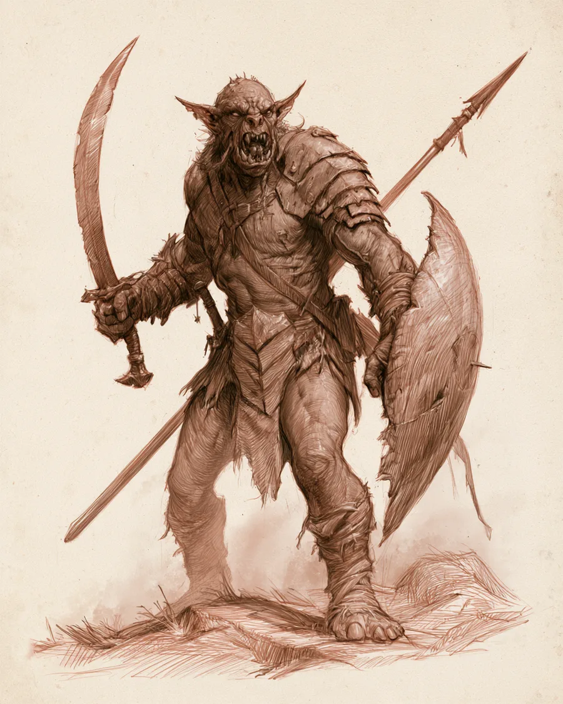
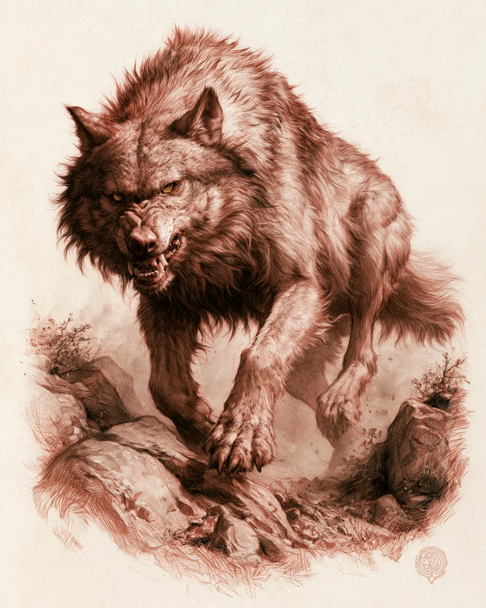
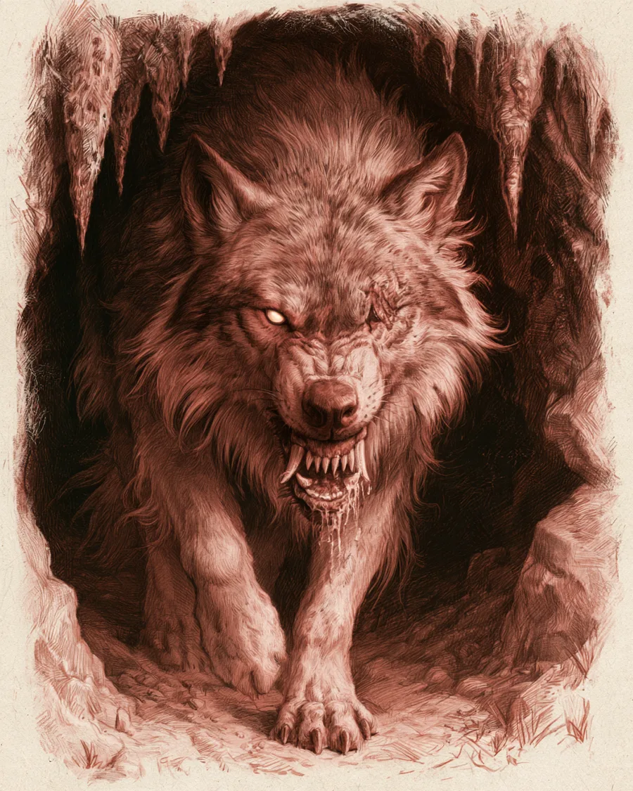
Termos usados neste guia
| Loremaster | quem narra (o Mestre) |
| Companhia | Company, o grupo de heróis |
| Esperança | Hope |
| Sombra (Temor / Feitiçaria) | Shadow (Dread / Sorcery) |
| Fadiga | Fatigue |
| Ferido | Wounded |
| Weary / Miserable | estados: exausto / miserável |
| Endurance | vigor, pontos de "vida" |
| Hate / Resolve | reserva dos adversários |
| Might | quantas vezes o adversário precisa ser Ferido |
| Journey / Marching Test | viagem / teste de marcha |
| Council | conselho, cena social com Resistência |
| Fase da Companhia | Fellowship Phase |
| Má Ação | Misdeed |
| Feat Die | d12 com Runa de Gandalf e Olho de Sauron |
| Success Die | d6; o 6 (tengwar) é um ícone de êxito |
| Favoured / Ill-favoured | dois Feat Dice, melhor / pior |
| (1d), (2d) | ganha ou perde Success Dice |
| TN / NA | Target Number, Número Alvo |
| Grande êxito | 1 ícone; extraordinário, 2+ |
| AWE, ATHLETICS, AWARENESS | Temor, Atletismo, Percepção |
| HUNTING, SONG, CRAFT | Caça, Canção, Ofício |
| ENHEARTEN, TRAVEL, INSIGHT | Encorajar, Viagem, Intuição |
| HEALING, COURTESY, BATTLE | Cura, Cortesia, Batalha |
| PERSUADE, STEALTH, SCAN | Persuadir, Furtividade, Vasculhar |
| EXPLORE, RIDDLE, LORE | Explorar, Enigma, Tradição |
| VALOUR / WISDOM | Valor / Sabedoria |
Sombras de Eriador · guia de fã, sem fins comerciais. Over Hill and Under Hill © Free League Publishing e Sophisticated Games. Este guia não substitui o Starter Set.